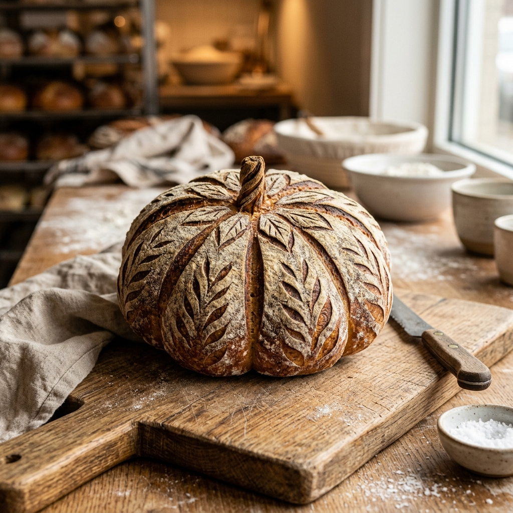
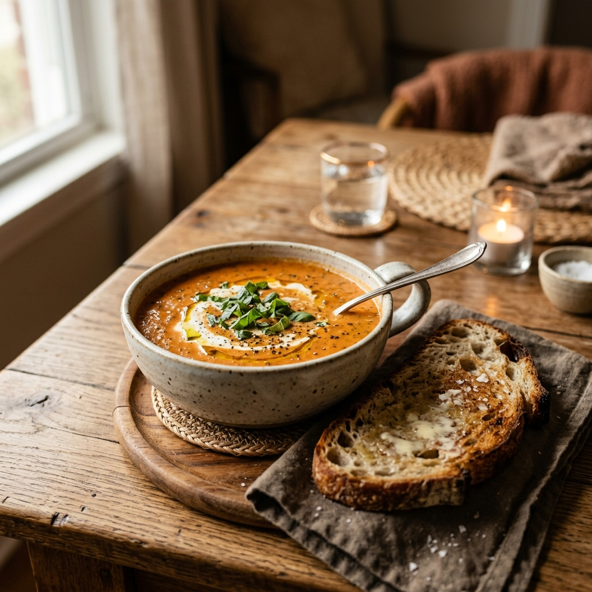

Naturally leavened, slow-fermented breads, scratch-made soups, and small-batch pastries — crafted with care, patience, and real ingredients.
We believe that good bread takes time. Our signature sourdough is fermented slowly to develop complex flavors and a beautiful, crusty exterior with a soft, chewy crumb. Paired with our rotating weekly scratch-made soups, it's a hug in a bowl.
See What's Baking →52 College Ave., Rexburg, Idaho
(208) 656-1852
